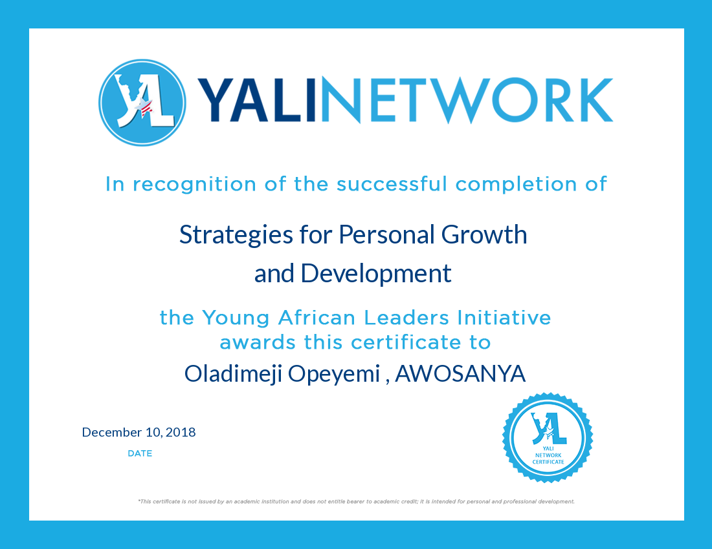

Copy of My Resume Right here Download
Import and Travels Executive (Aug. 2018- Till Date)
Accountant | Financial Analyst |Data Entry Specialists | Auditor| Credit Analysis Manager | Payroll Officer| Risk Officer |Quality Control Officer | Tendering | Compliance Manager | Assistant Controller | Tax Accountant | Bookkeeping Clerk | Billing Clerk | Cost Estimator | Budget Analyst | Accounts Receivable Clerk | Accounts Payable Clerk | Accounting Clerk | Accounting Assistant | Environmental Accountants | Government Accountant | Cost Accountant | Tax Accountant | Compliance Analyst | Treasury Analyst |Personal Financial Advisor | | Bi Analyst | Quality Assurance | Quantitative Developer | Quantitative Researcher | Algorithm Trader | Quantitative Trader | Portfolio Manager For Financial Industry| Public Policy |Web Designer | Front end developer | Back end developer | Responsive Web Designer | Software Developer |
Freelancing ( Till Date ) : I have had lot of experience working as a freelancer base on Data entry, Web and software developing , Script writing , Accounting presentations based on standard , delivey some lectures on particular subject as required ranging from coding to complex mathmatics … Doing some Job and meeting up the delivery time as agreed …
Settlement and Reconcillation Officer (3 year : 8 Months)
Biometric Registration Officer (6 Months)
Loan Officer (1 year)
Lagos State Polytechnic
Ago - Iwoye Secondary School
Senior School Leaving Certificate 2003
Alison
BitDegree
Udemy
Universal Class
Young African leaders Initiative
Management Strategies for People and Resources
Strategies For Personal Growth And Development
Lagos State Polytechnic
Accountant / Full Stack Developer